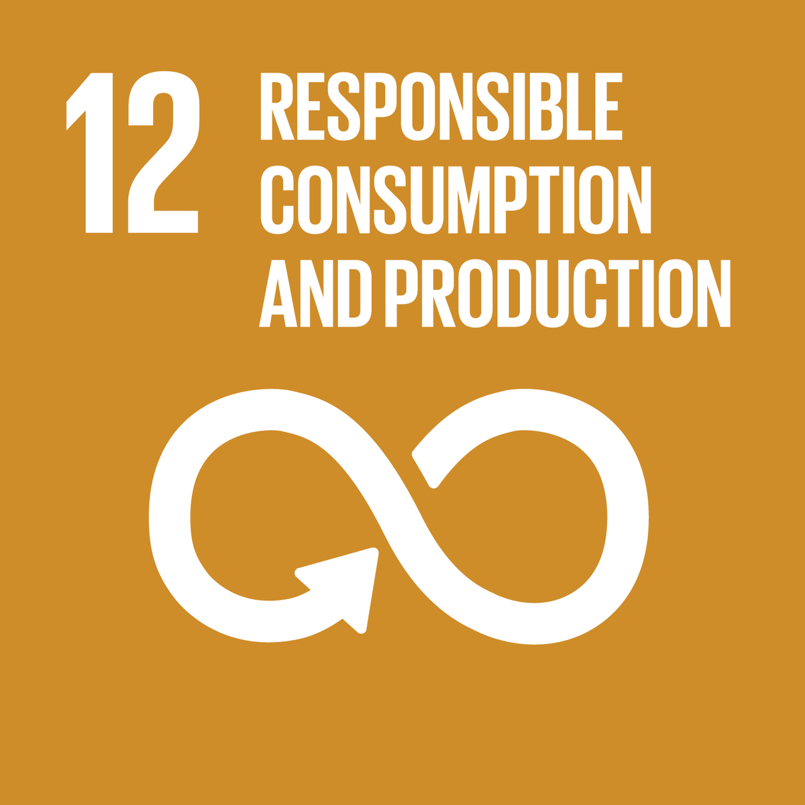

Who We Are
At Soap2Wellness, we are passionate about creating a sustainable future by recycling used cooking oil into eco-friendly soaps. Our mission is to empower communities, reduce waste, and promote a circular economy. By connecting local restaurants with NGOs, we create opportunities for skill development and support environmental sustainability.
Our Vision
We envision a world where waste is repurposed for good, communities thrive through empowerment, and every purchase makes a meaningful impact.
Our Alignment with UN SDGs
-
 Goal 3: Good Health and Well-being - By ensuring our soaps are free of harmful chemicals and promoting hygiene practices, we contribute to healthier communities.
Goal 3: Good Health and Well-being - By ensuring our soaps are free of harmful chemicals and promoting hygiene practices, we contribute to healthier communities.
-
 Goal 8: Decent Work and Economic Growth - We provide skill development and job opportunities to underprivileged individuals, helping them achieve financial independence.
Goal 8: Decent Work and Economic Growth - We provide skill development and job opportunities to underprivileged individuals, helping them achieve financial independence.
-  Goal 12: Responsible Consumption and Production - By recycling used cooking oil into soaps, we promote sustainable production practices and reduce waste.